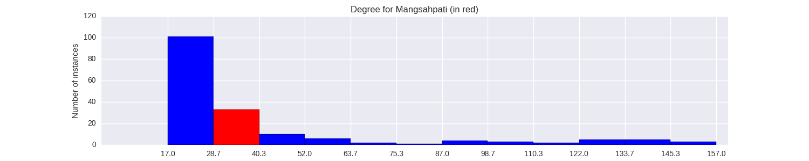

Quantiative Wayang Dictionary
Mangsahpati

Terms of address: Prabu
Type: Human
Origin: India
Notes on the Sanskrit version: King Virata was the ruler of the Matsya Kingdom. The Pandavas served him during their final year of exile as they needed to spend that year in disguise. His daughter Uttara married Arjuna's son, Abhimanyu.
Alternative names: Matswapati, Durgandana
Description in the Javanese version: King of Wirata, known as Durgandana in his youth. He helped the Pandawa in numerous occasions, most notably when they were building Amarta. The Pandawa served him at the end of their 13-year exile. He died defending the Pandawa in the Baratayuda war, together with all his sons. Other versions, said he achieved perfect death an incarnated into a fish, before the beginning of the war.
Found in the follwing lakon (stories):
Family relationships
Mother: Adrika
Father: Basuparicara
Siblings: Durgandini
Consorts: Rekatawati
Offspring: Seta, Utara, Wratsangka, Utari
More information
Ruler of: Wirata
Killed by: Durna
Sources: Ensiklopedi Wayang Purwa, pp. 180-182,344-345; Mengenal Gambar Tokoh Wayang Purwa, p. 86, 164; Ensiklopedi Wayang Indonesia, pp. 180-182 (Vol. III), 154-156 (Vol. VI); Rupa dan Karakter Wayang Purwa, p. 636,870
Network measurements for Mangsahpati
| Measurement | Value | |
|---|---|---|
| Degree | 32.0 |  |
| Weighted Degree | 51.0 |  |
| Closeness Centrality | 0.550632911392 |  |
| Betweeness Centrality | 4.54295533029 |  |
| Eigenvector Centrality | 0.0 |  |
{kind=link}
Characters in the same adegan as Mangsahpati
| Character | Link weight |
|---|---|
| Character | Link weight |